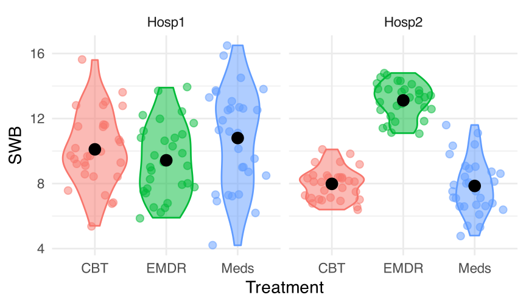
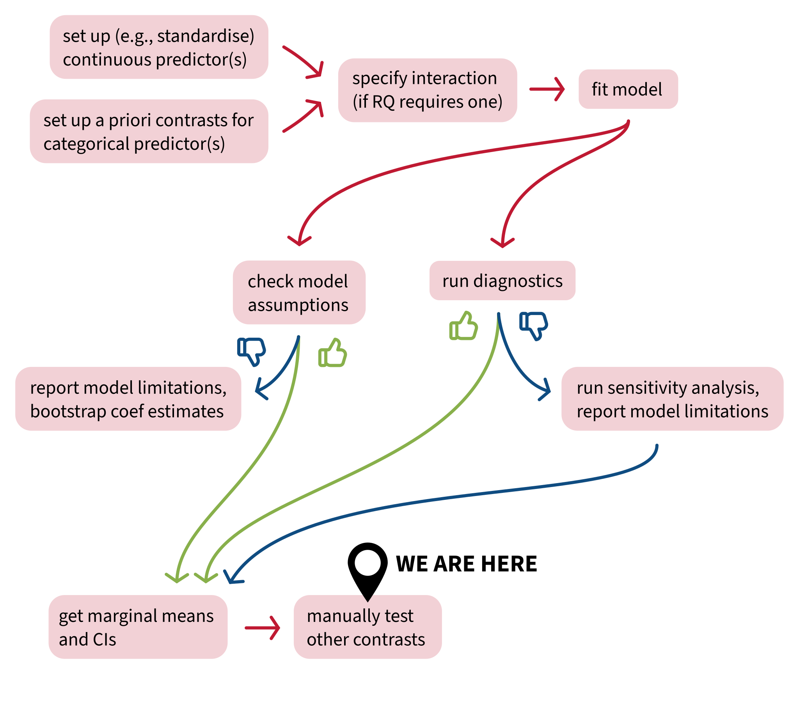
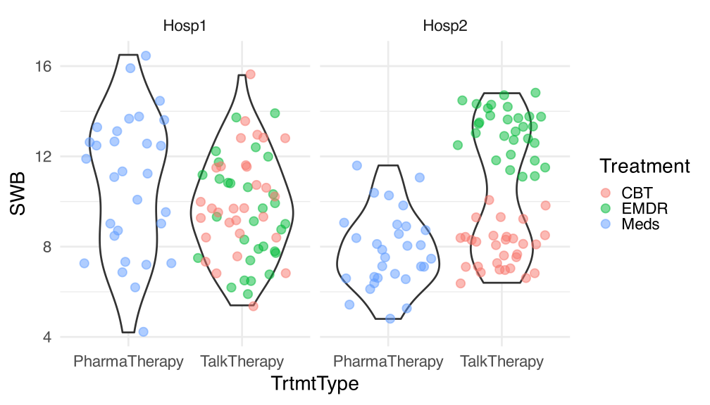
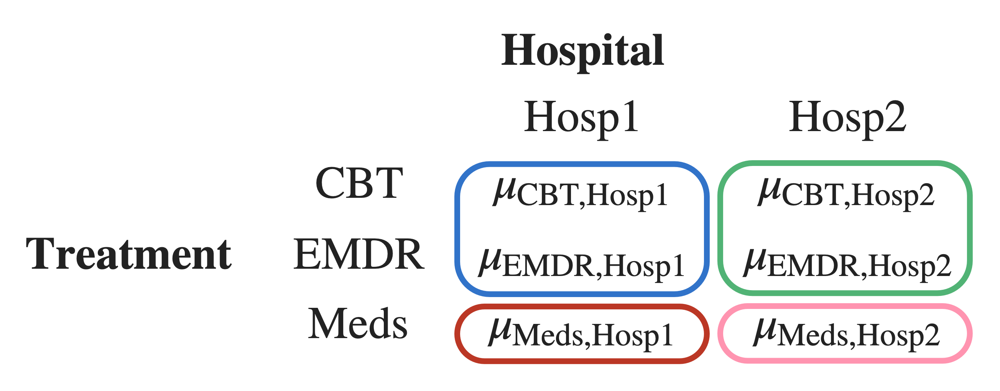
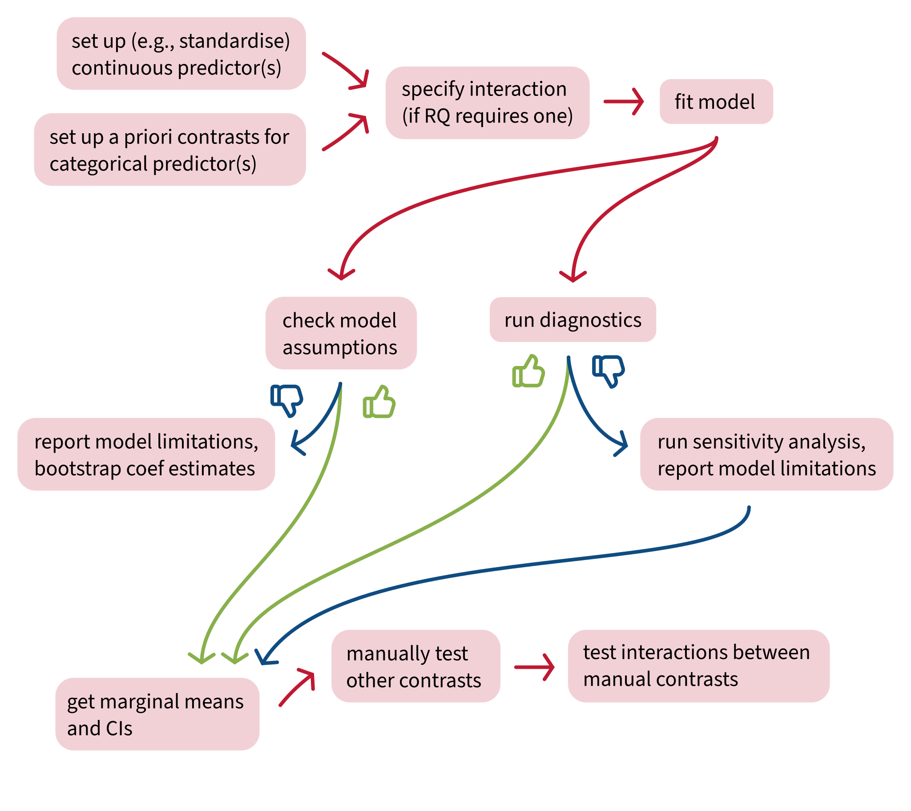
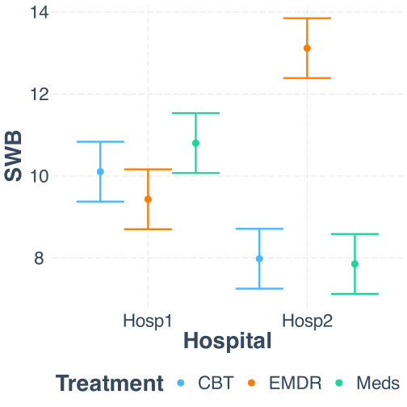
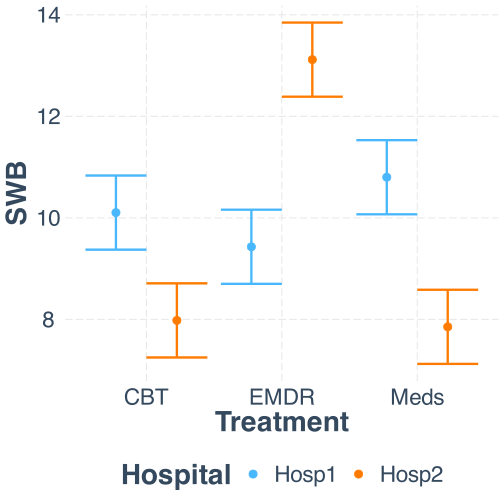
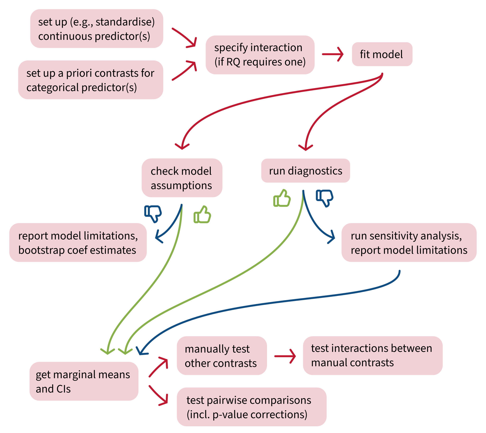
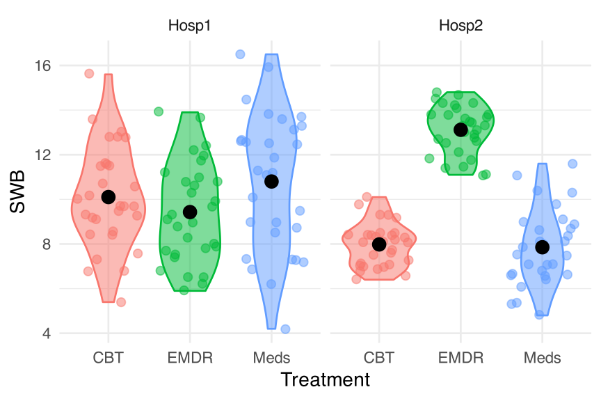
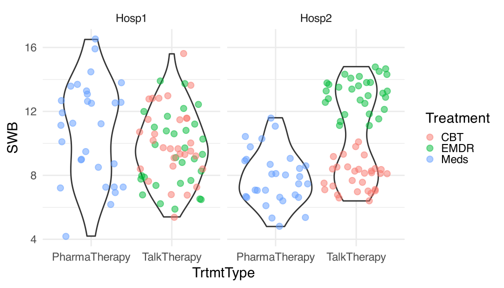

Manual contrast interactions and multiple comparisons
Data Analysis for Psychology in R 2
Elizabeth Pankratz (elizabeth.pankratz@ed.ac.uk)
Department of Psychology
University of Edinburgh
2025–2026
Course Overview
| Introduction to linear Models | Intro to linear regression |
| Interpreting linear models | |
| Testing individual predictors | |
| Model testing & comparison | |
| Linear model analysis | |
| Analysing Experimental Studies | Categorical predictors and dummy coding |
| Effect coding and manual post-hoc contrasts | |
| Assumptions and diagnostics | |
| Bootstrapping and confidence intervals | |
| Categorical predictors: Practice analysis |
| Interactions | Mean-centering and numeric/categorical interactions |
| Numeric/numeric interactions | |
| Categorical/categorical interactions | |
| Manual contrast interactions and multiple comparisons | |
| Interactions: Practice analysis | |
| Advanced Topics | Power analysis |
| Binary logistic regression I | |
| Binary logistic regression II | |
| Logistic regression: Practice analysis | |
| Exam prep and course Q&A |
This week’s learning objectives
How do we test an interaction between two manually-coded post-hoc contrasts?
What’s the main danger of running multiple statistical tests on the same data?
What are two common ways that we can correct for running multiple statistical tests on the same data?
Where we are in the analysis workflow

Interactions between manual post-hoc contrasts
Today’s data
The subjective wellbeing (SWB) of patients at two different hospitals:
Hosp1:

Hosp2:

who have undergone one of three different treatments for depression:
Cognitive Behavioural Therapy (CBT)

Eye Movement Desensitisation and Reprocessing therapy (EMDR)

Antidepressant medication
(Meds):
Visualising the data
What we want to know: Is the difference in SWB between talk therapy (both CBT and EMDR) and pharmaceutical therapy (Meds) different in each hospital?
- We’ll manually chunk CBT and EMDR together in a post-hoc contrast, which we’ll call
TrtmtType. - We’ll also specify a very simple manual post-hoc contrast for
Hospital. - Then we’ll make a post-hoc interaction contrast to test whether the
Hospitalcontrast interacts with theTrtmtTypecontrast.
Set up the model
We only care about the post-hoc contrasts, so it’s fine to fit the model using R’s default treatment coding.
Check on the reference levels:
The model in R syntax:
On your own time, practice writing out the model’s linear expression in mathematical terms, and check the appendix for the solution :)
Get estimated marginal means
Treatment Hospital emmean SE df lower.CL upper.CL
CBT Hosp1 10.10 0.37 174 9.37 10.83
EMDR Hosp1 9.43 0.37 174 8.70 10.16
Meds Hosp1 10.80 0.37 174 10.07 11.53
CBT Hosp2 7.98 0.37 174 7.25 8.71
EMDR Hosp2 13.12 0.37 174 12.39 13.85
Meds Hosp2 7.85 0.37 174 7.12 8.58
Confidence level used: 0.95 Defining post-hoc contrasts
Define post-hoc contrast for TrtmtType
Step 1: “Chunk” together the two group(s) that the research question is comparing.
- Chunk 1:
Meds. - Chunk 2:
CBT,EMDR.
Step 2: Assign a 0 to any group(s) that aren’t in one of the chunks from Step 1.
Step 3: Assign a plus sign to every group in Chunk 1, and a minus sign to every group in Chunk 2.
Step 4: Count the plus signs and minus signs.
Step 5: To figure out the actual values for each cell, start with 1 and –1. Divide 1 by \(n_{plus}\), and divide –1 by \(n_{minus}\).
Step 6: In the coding matrix, replace the plus signs with the positive coding value from Step 5, and replace the minus signs with the negative coding value from Step 5. Done!
Treatment |
TrtmtType |
|---|---|
CBT |
|
EMDR |
|
Meds |
|
wooclap.com
code UBEQCF
Define post-hoc contrast for Hospital
Step 1: “Chunk” together the two group(s) that the research question is comparing.
- Chunk 1:
Hosp2. - Chunk 2:
Hosp1.
Step 2: Assign a 0 to any group(s) that aren’t in one of the chunks from Step 1.
Step 3: Assign a plus sign to every group in Chunk 1, and a minus sign to every group in Chunk 2.
Step 4: Count the plus signs and minus signs.
Step 5: To figure out the actual values for each cell, start with 1 and –1. Divide 1 by \(n_{plus}\), and divide –1 by \(n_{minus}\).
Step 6: In the coding matrix, replace the plus signs with the positive coding value from Step 5, and replace the minus signs with the negative coding value from Step 5. Done!
Hospital |
Hosp |
|---|---|
Hosp1 |
|
Hosp2 |
|
wooclap.com
code UBEQCF
Visualising the interaction we’ll test
We want to know: Is there a difference between hospitals in how different treatment types (talk therapy vs. pharmaceutical therapy) are associated with SWB?
H0/H1 for interactions between manual contrasts
Step 1: Define means of all combinations of factor levels
When we test differences between groups, we’re testing differences between group means.
So, we will start by defining the group means for all combinations of factor levels in our data.

Next, we’ll combine these group means in the way that the manual contrasts specify.
Step 2: “Chunk” some of the means together
Within each hospital, we chunk CBT and EMDR together, because they are both talk therapy.
When we chunk two group means together, mathematically we are taking the mean of those group means.
To represent the mean of the blue chunk (top left):
\[ \frac{ \mu_{\text{CBT,Hosp1}} + \mu_{\text{EMDR,Hosp1}} }{2} \]
To represent the mean of the green chunk (top right):
\[ \frac{ \mu_{\text{CBT,Hosp2}} + \mu_{\text{EMDR,Hosp2}} }{2} \]
Step 3: Set up H0 as differences between chunk means, based on RQ
RQ: Is the difference in SWB between talk therapy (both CBT and EMDR) and pharmaceutical therapy (Meds) different in each hospital?
Null hypothesis in words: The difference in SWB between talk therapy (both CBT and EMDR) and pharmaceutical therapy (Meds) is the same in each hospital.
In words arranged like the math:
- (the mean SWB of CBT and EMDR in Hosp1)
- minus
- (the mean SWB of Meds in Hosp1)
- equals
- (the mean SWB of CBT and EMDR in Hosp2)
- minus
- (the mean SWB of Meds in Hosp2)
In math arranged like the words:
- \(\frac{ \mu_{\text{CBT,Hosp1}} + \mu_{\text{EMDR,Hosp1}} }{2}\)
- –
- \(\mu_{\text{Meds,Hosp1}}\)
- =
- \(\frac{ \mu_{\text{CBT,Hosp2}} + \mu_{\text{EMDR,Hosp2}} }{2}\)
- –
- \(\mu_{\text{Meds,Hosp2}}\)
Formal H0 and H1 for interactions between manual contrasts
Version 1: Differences are the same (H0) or not the same (H1):
\[\begin{align} H_0 &: \frac{ \mu_{\text{CBT,Hosp1}} + \mu_{\text{EMDR,Hosp1}} }{2} - \mu_{\text{Meds,Hosp1}} = \frac{ \mu_{\text{CBT,Hosp2}} + \mu_{\text{EMDR,Hosp2}} }{2} - \mu_{\text{Meds,Hosp2}} \\ H_1 &: \frac{ \mu_{\text{CBT,Hosp1}} + \mu_{\text{EMDR,Hosp1}} }{2} - \mu_{\text{Meds,Hosp1}} \neq \frac{ \mu_{\text{CBT,Hosp2}} + \mu_{\text{EMDR,Hosp2}} }{2} - \mu_{\text{Meds,Hosp2}} \end{align}\]
Version 2, also fine: Difference between differences is zero (H0) or not zero (H1):
\[\begin{align} H_0 &: \Big( \frac{ \mu_{\text{CBT,Hosp1}} + \mu_{\text{EMDR,Hosp1}} }{2} - \mu_{\text{Meds,Hosp1}} \Big) - \Big( \frac{ \mu_{\text{CBT,Hosp2}} + \mu_{\text{EMDR,Hosp2}} }{2} - \mu_{\text{Meds,Hosp2}} \Big) = 0 \\ H_1 &: \Big( \frac{ \mu_{\text{CBT,Hosp1}} + \mu_{\text{EMDR,Hosp1}} }{2} - \mu_{\text{Meds,Hosp1}} \Big) - \Big( \frac{ \mu_{\text{CBT,Hosp2}} + \mu_{\text{EMDR,Hosp2}} }{2} - \mu_{\text{Meds,Hosp2}} \Big) \neq 0 \\ \end{align}\]
(LaTeX code in appendix)
Post-hoc contrasts in R
Post-hoc contrasts in R
Treatment |
TrtmtType |
|---|---|
CBT |
–1/2 |
EMDR |
–1/2 |
Meds |
1 |
Hospital |
Hosp |
|---|---|
Hosp1 |
–1 |
Hosp2 |
1 |
The interaction’s contrast is the product of the two interacting contrasts
In other words: To get the interaction’s contrast, we multiply together the two contrasts for the interacting predictors.
| Treatment | Hospital | TrtmtType | Hosp | TrtmtType:Hosp |
|---|---|---|---|---|
| CBT | Hosp1 | –0.5 | –1 | |
| EMDR | Hosp1 | –0.5 | –1 | |
| Meds | Hosp1 | 1 | –1 | |
| CBT | Hosp2 | –0.5 | 1 | |
| EMDR | Hosp2 | –0.5 | 1 | |
| Meds | Hosp2 | 1 | 1 |
wooclap.com, code UBEQCF
Put the interaction’s contrast into R, two ways
(1) The fancy way:
Here are the two individual manual contrasts we defined a couple slides ago:
Multiply them together using outer(). Write TrtmtType first because we told emmeans ~ Treatment * Hospital, with Treatment first.
Flatten this table using as.vector():
Put the interaction’s contrast into R, two ways
(2) The manual way:
Check the order of items that emmeans uses:
Treatment Hospital emmean SE df lower.CL upper.CL
CBT Hosp1 10.10 0.37 174 9.37 10.83
EMDR Hosp1 9.43 0.37 174 8.70 10.16
Meds Hosp1 10.80 0.37 174 10.07 11.53
CBT Hosp2 7.98 0.37 174 7.25 8.71
EMDR Hosp2 13.12 0.37 174 12.39 13.85
Meds Hosp2 7.85 0.37 174 7.12 8.58
Confidence level used: 0.95 Figure out the correct coding values manually (as we did a few slides ago).
Make sure to match emmeans’ order and type up the contrast coding by hand:
Test the interaction contrast
When we test the contrast using contrast(), we are testing the H0 that the estimate is equal to zero. For this interaction, the H0 says there’s no difference between Hospital in how TrtmtType is associated with SWB.
contrast estimate SE df t.ratio p.value
TrtmtType:Hospital -3.73 0.641 174 -5.819 <0.0001Get the associated 95% CIs using confint():
The null hypothesis:
- There’s no difference between hospitals in how different treatment types (talk therapy vs. pharmaceutical therapy) are associated with SWB.
- In other words, if the null hypothesis were true, the data for both hospitals would pattern the same.
Can we reject the null hypothesis?


Where does this estimate of –3.73 come from?
It’s the result of multiplying each group mean (column mean_SWB) by the corresponding value from the interaction’s contrast (column TrtmtType:Hospital), shown in the column product, and then adding all those numbers together.
| Treatment | Hospital | mean_SWB | TrtmtType:Hospital | product |
|---|---|---|---|---|
| CBT | Hosp1 | 10.10 | 0.5 | 5.05 |
| EMDR | Hosp1 | 9.43 | 0.5 | 4.72 |
| Meds | Hosp1 | 10.80 | -1.0 | -10.80 |
| CBT | Hosp2 | 7.98 | -0.5 | -3.99 |
| EMDR | Hosp2 | 13.12 | -0.5 | -6.56 |
| Meds | Hosp2 | 7.85 | 1.0 | 7.85 |
Can we give this number a more intuitive explanation?
Not really tbh :( Interaction coefficients are adjustments to other effects, not effects themselves. But we don’t have any other coefficients to relate this adjustment to, so we can’t compute simple slopes or anything. And it’s not very useful to interpret this single number on its own.
The reason manual interactions are useful is essentially just the significance test.
Extending the analysis workflow

Testing simple effects
Retrieval practice: Testing simple effects
- What’s a simple effect?
- If I ask for simple effects of
Hospitalat each level ofTreatment, what am I looking for? - What’s the difference between simple effects and simple slopes?
- What does it mean to test a simple effect?
Testing simple effects with pairs()
We’ve seen the math of how to compute simple effects by hand.
But that only gives us the value of the effect, not a test of whether that value is significantly different from zero.
When we had continuous predictors, we could test simple slopes using probe_interactions().
Now that we have categorical predictors, we can test simple effects by giving the pairs() function the model’s emmeans object and specifing the simple= argument.
For example, to get the simple effects of Hospital at each level of Treatment:
Simple effects of Hospital at each level of Treatment
Treatment = CBT:
contrast estimate SE df t.ratio p.value
Hosp1 - Hosp2 2.12 0.523 174 4.059 <0.0001
Treatment = EMDR:
contrast estimate SE df t.ratio p.value
Hosp1 - Hosp2 -3.69 0.523 174 -7.047 <0.0001
Treatment = Meds:
contrast estimate SE df t.ratio p.value
Hosp1 - Hosp2 2.95 0.523 174 5.632 <0.0001
Note on the positive/negative signs:
pairs()computesHosp1 – Hosp2because of how factor levels in the factorHospitalare ordered.- To compute
Hosp2 – Hosp1instead, we would have to codeHosp2as the reference level ofHospitalbefore fitting the model.
Simple effects of Treatment for each level of Hospital
Hospital = Hosp1:
contrast estimate SE df t.ratio p.value
CBT - EMDR 0.673 0.523 174 1.287 0.4044
CBT - Meds -0.697 0.523 174 -1.332 0.3796
EMDR - Meds -1.370 0.523 174 -2.619 0.0259
Hospital = Hosp2:
contrast estimate SE df t.ratio p.value
CBT - EMDR -5.137 0.523 174 -9.819 <0.0001
CBT - Meds 0.127 0.523 174 0.242 0.9682
EMDR - Meds 5.263 0.523 174 10.061 <0.0001
P value adjustment: tukey method for comparing a family of 3 estimates 
What’s this “P value adjustment: tukey method” thing? We’ll find out soon, but first …
Visualising cat/cat interactions
The multiple comparisons problem
Let’s roll some dice
On a twenty-sided die (a d20), the probability of rolling a 1 (or any other individual number) is 1/20 = 5%.
But if we roll the d20 over and over again, the probability that we’ll roll a 1 at least once goes up and up and up.
\(.05\)
\(= 1 – 0.95\)
\(.0975\)
\(= 1 – (0.95 \times 0.95)\)
\(.1426\)
\(= 1 – (0.95 \times 0.95 \times 0.95) = 1 - 0.95^3\)
In general:
\[ P(\text{rolling a 1 in m rolls}) = 1 - (1 - 0.05)^m \]
What’s the probability that we’ll roll a 1 at least once in twenty rolls?
wooclap.com, code UBEQCF
From dice to statistical tests
Why did we spend time rolling those dice?
- When \(\alpha = .05\),
- we accept the risk that 5% of the time, we’ll reject the H0 when actually we shouldn’t.
- (aka that we’ll get a false positive result)
- (aka that we’ll make a Type I error)
- A d20 rolling a 1 happens with the same probability as us rejecting the H0 when actually we shouldn’t: one time in twenty.
- We saw that the probability of rolling a 1 at least once increases, the more dice you roll. It’s also true that the probability of rejecting the H0 when actually we shouldn’t will increase, the more statistical tests we run.
- So if we run 20 statistical tests, say, then even though we only want to incorrectly reject the H0 one time out of twenty (5% of the time), we would actually reject it with much higher probability.
- The actual level of risk becomes higher than the level of risk that we wanted.
relevant XKCD (https://xkcd.com/882/)


The more tests you run, the more likely you are to see something unlikely just due to chance
With \(\alpha = 0.05\), we accept the risk that, we will incorrectly reject the null hypothesis 5% of the time.
And if we accept that positive result and ignore all the negative results (green jelly bean style), then we run into the multiple comparisons problem: we are more than 5% likely to see at least one false positive, the more tests (aka, the more comparisons) we run.
How much more likely?
Depends on the number of tests.
\[ \begin{align} P(\text{incorrectly reject H0}) &= \alpha \\ P(\text{correctly reject H0}) &= 1 - \alpha \\ P(\text{correctly reject H0 in} ~m~ \text{tests}) &= (1 - \alpha)^m \\ P(\text{incorrectly reject H0 in} ~m~ \text{tests}) &= 1 - (1 - \alpha)^m \\ \end{align} \]
How likely are we to incorrectly reject H0?
For the green jelly beans scenario:
\[ \begin{align} P(\text{incorrectly reject H0 in 20 tests}) &= 1 - (1 - 0.05)^{20} \\ &= 1 - (0.95)^{20} \\ &= 1 - 0.36 \\ &= 0.64 \\ \end{align} \]
We accepted the risk of incorrectly rejecting the null hypothesis 5% of the time. But if we run 20 tests and accept any positive result, we will risk incorrectly rejecting H0 64% of the time!
How do we fix it?
Lower the \(\alpha\) level (aka our accepted level of risk, aka the false positive rate, aka the Type I error rate) to compensate for the increased probability of incorrectly rejecting H0.
Common corrections
- Tukey
- Bonferroni
- Šídák
- Scheffe
- Holm’s step-down
- Hochberg’s step-up
- …
You only need to know about Tukey and Bonferroni, the two most common.
We’ll start with Bonferroni, because it’s simplest.
The Bonferroni correction
The goal is to lower the \(\alpha\) level of our tests so that it matches our desired level of risk.
The Bonferroni correction takes our original \(\alpha\) level and divides it by the number of tests:
\[ \alpha_{\text{Bonferroni}} = \frac{\alpha}{\text{number of tests}} \]
For the jelly bean scenario, with 20 tests:
For our simple effects of Treatment by Hospital, with three tests:
Bonferroni in action
Hospital = Hosp1:
contrast estimate SE df t.ratio p.value
CBT - EMDR 0.673 0.523 174 1.287 0.5993
CBT - Meds -0.697 0.523 174 -1.332 0.5541
EMDR - Meds -1.370 0.523 174 -2.619 0.0288
Hospital = Hosp2:
contrast estimate SE df t.ratio p.value
CBT - EMDR -5.137 0.523 174 -9.819 <0.0001
CBT - Meds 0.127 0.523 174 0.242 1.0000
EMDR - Meds 5.263 0.523 174 10.061 <0.0001
P value adjustment: bonferroni method for 3 tests Tukey’s Honest Significant Differences (HSD)
Think back to independent-samples t-tests in DAPR1:
- This kind of t-test compares whether two group means are significantly different from one another.
- The difference between group means is represented as a t-statistic.
- The t-statistic is compared to a critical value from the t-distribution to decide whether the difference is significant.
At heart, Tukey’s HSD is very similar!
- Tukey’s HSD compares the means of the members of one pair in a pairwise comparison.
- The difference between group means is represented as a q-statistic.
- The q-statistic is compared to a critical value from the studentised range distribution to decide whether the difference is significant.
You do not need to know how to calculate this adjustment by hand!
If you want to know, here’s a YouTube video that walks through the calculation. (The main action is between 3:41–7:42.)
Tukey in action
Hospital = Hosp1:
contrast estimate SE df t.ratio p.value
CBT - EMDR 0.673 0.523 174 1.287 0.4044
CBT - Meds -0.697 0.523 174 -1.332 0.3796
EMDR - Meds -1.370 0.523 174 -2.619 0.0259
Hospital = Hosp2:
contrast estimate SE df t.ratio p.value
CBT - EMDR -5.137 0.523 174 -9.819 <0.0001
CBT - Meds 0.127 0.523 174 0.242 0.9682
EMDR - Meds 5.263 0.523 174 10.061 <0.0001
P value adjustment: tukey method for comparing a family of 3 estimates When to choose Bonferroni vs. Tukey
When to choose Bonferroni:
- When you’re interested in a small number of comparisons.
- When you’ve got a set of p-values that come from the same data, regardless of what kind of test generated them.
When to choose Tukey:
- When you want to compare the means of levels of a categorical predictor.
- When you’re interested in many/all pairwise comparisons between groups.
Check the flashcards for more details.
Analysis workflow: The final form!

Back matter
Revisiting this week’s learning objectives
How do we test an interaction between two manually-coded post-hoc contrasts?
- Manually code the interaction between them, using the same procedure that we saw for treatment-coded predictors last week:
- get all combinations of levels, and
- multiply each pair of coding values together.
- The result is the contrast coding of the interaction.
- Test that contrast using our
emmeans()toolkit.
What’s the main danger of running multiple statistical tests on the same data?
- We’ll end up rejecting the H0 at least once in all those tests with a probability much higher than our desired \(\alpha\) level.
- This phenomenon is called the “multiple comparisons problem”.
- The solution: Make the \(\alpha\) level smaller, to compensate for this increased likelihood of rejecting the H0.
What are two common ways that we can correct for running multiple statistical tests on the same data?
- Bonferroni correction (a global adjustment to all \(\alpha\)s).
- Tukey’s HSD (an adjustment to each comparison’s \(\alpha\) based on how different the two group means being compared are).
This week
Tasks:

Attend your lab and work together on the exercises
Support:

Help each other on the Piazza forum

Complete the weekly quiz

Attend office hours (see Learn page for details)
Appendix
Code for data plot
Code for visualising manual chunks
H0 and H1 LaTeX code
Version 1: Differences are the same (H0) or not the same (H1):
\[\begin{align} H_0 &: \frac{ \mu_{\text{CBT,Hosp1}} + \mu_{\text{EMDR,Hosp1}} }{2} - \mu_{\text{Meds,Hosp1}} = \frac{ \mu_{\text{CBT,Hosp2}} + \mu_{\text{EMDR,Hosp2}} }{2} - \mu_{\text{Meds,Hosp2}} \\ H_1 &: \frac{ \mu_{\text{CBT,Hosp1}} + \mu_{\text{EMDR,Hosp1}} }{2} - \mu_{\text{Meds,Hosp1}} \neq \frac{ \mu_{\text{CBT,Hosp2}} + \mu_{\text{EMDR,Hosp2}} }{2} - \mu_{\text{Meds,Hosp2}} \end{align}\]
$$
\begin{align}
H_0 &: \frac{ \mu_{\text{CBT,Hosp1}} + \mu_{\text{EMDR,Hosp1}} }{2} - \mu_{\text{Meds,Hosp1}} =
\frac{ \mu_{\text{CBT,Hosp2}} + \mu_{\text{EMDR,Hosp2}} }{2} - \mu_{\text{Meds,Hosp2}} \\
H_1 &: \frac{ \mu_{\text{CBT,Hosp1}} + \mu_{\text{EMDR,Hosp1}} }{2} - \mu_{\text{Meds,Hosp1}} \neq
\frac{ \mu_{\text{CBT,Hosp2}} + \mu_{\text{EMDR,Hosp2}} }{2} - \mu_{\text{Meds,Hosp2}}
\end{align}
$$Version 2, also fine: Difference between differences is zero (H0) or not zero (H1):
\[\begin{align} H_0 &: \Big( \frac{ \mu_{\text{CBT,Hosp1}} + \mu_{\text{EMDR,Hosp1}} }{2} - \mu_{\text{Meds,Hosp1}} \Big) - \Big( \frac{ \mu_{\text{CBT,Hosp2}} + \mu_{\text{EMDR,Hosp2}} }{2} - \mu_{\text{Meds,Hosp2}} \Big) = 0 \\ H_1 &: \Big( \frac{ \mu_{\text{CBT,Hosp1}} + \mu_{\text{EMDR,Hosp1}} }{2} - \mu_{\text{Meds,Hosp1}} \Big) - \Big( \frac{ \mu_{\text{CBT,Hosp2}} + \mu_{\text{EMDR,Hosp2}} }{2} - \mu_{\text{Meds,Hosp2}} \Big) \neq 0 \\ \end{align}\]
$$
\begin{align}
H_0 &: \Big( \frac{ \mu_{\text{CBT,Hosp1}} + \mu_{\text{EMDR,Hosp1}} }{2} - \mu_{\text{Meds,Hosp1}} \Big) -
\Big( \frac{ \mu_{\text{CBT,Hosp2}} + \mu_{\text{EMDR,Hosp2}} }{2} - \mu_{\text{Meds,Hosp2}} \Big) = 0 \\
H_1 &: \Big( \frac{ \mu_{\text{CBT,Hosp1}} + \mu_{\text{EMDR,Hosp1}} }{2} - \mu_{\text{Meds,Hosp1}} \Big) -
\Big( \frac{ \mu_{\text{CBT,Hosp2}} + \mu_{\text{EMDR,Hosp2}} }{2} - \mu_{\text{Meds,Hosp2}} \Big) \neq 0 \\
\end{align}
$$Linear expression for model
\[
\begin{align}
\text{SWB} ~=~& \beta_0 +
(\beta_1 \cdot \text{Treatment}_{\text{EMDR}}) +
(\beta_2 \cdot \text{Treatment}_{\text{Meds}}) +
(\beta_3 \cdot \text{Hospital}) ~ + \\
& (\beta_4 \cdot \text{Treatment}_{\text{EMDR}} \cdot \text{Hospital}) +
(\beta_5 \cdot \text{Treatment}_{\text{Meds}} \cdot \text{Hospital}) +
\epsilon
\end{align}
\]
Are we adjusting \(\alpha\) or p?
If we compare pairs() with no correction and with the Bonferroni correction, it’s only the p-values that change.
Hospital = Hosp1:
contrast estimate SE df t.ratio p.value
CBT - EMDR 0.673 0.523 174 1.287 0.1998
CBT - Meds -0.697 0.523 174 -1.332 0.1847
EMDR - Meds -1.370 0.523 174 -2.619 0.0096
Hospital = Hosp2:
contrast estimate SE df t.ratio p.value
CBT - EMDR -5.137 0.523 174 -9.819 <0.0001
CBT - Meds 0.127 0.523 174 0.242 0.8090
EMDR - Meds 5.263 0.523 174 10.061 <0.0001Hospital = Hosp1:
contrast estimate SE df t.ratio p.value
CBT - EMDR 0.673 0.523 174 1.287 0.5993
CBT - Meds -0.697 0.523 174 -1.332 0.5541
EMDR - Meds -1.370 0.523 174 -2.619 0.0288
Hospital = Hosp2:
contrast estimate SE df t.ratio p.value
CBT - EMDR -5.137 0.523 174 -9.819 <0.0001
CBT - Meds 0.127 0.523 174 0.242 1.0000
EMDR - Meds 5.263 0.523 174 10.061 <0.0001
P value adjustment: bonferroni method for 3 tests So technically, pairs() adjusts p, not \(\alpha\). But whichever one is adjusted, the results are equivalent!
Adjusting \(\alpha\) by dividing by 3 is the same as adjusting p by multiplying by 3 (and if the value ends up above 1, setting it equal to 1).
For example, the unadjusted p-value in Hosp1 for CBT - Meds, 0.1847, multiplied by 3 (the number of tests), is the Bonferroni-adjusted p-value, 0.5541.